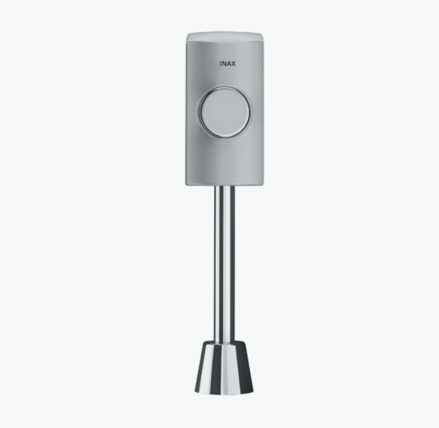
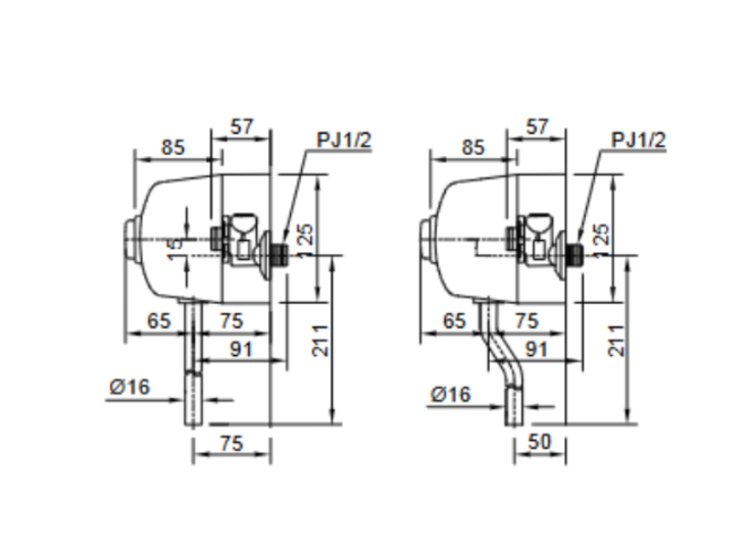

Van xả bồn tiểu INAX UF-4VS là giải pháp lý tưởng để quản lý và tối ưu hóa lượng nước tiêu thụ trong các không gian công cộng, văn phòng hay các trung tâm thương mại. Với sự tiện lợi, độ bền cao cùng khả năng tiết kiệm nước vượt trội, sản phẩm cam kết mang lại hiệu suất sử dụng bền bỉ và lâu dài.Thiết kế van xả UF-4VS truyền thống, vận hành giản đơnVan xả bồn tiểu nam UF-4VS được thiết kế theo kiểu ấn truyền thống, mang lại sự tiện lợi và quen thuộc cho người sử dụng. Thân van xả ấn của bồn tiểu được chế tạo để hoạt động ổn định và chính xác. Cơ chế ấn đơn giản, không cần dùng điện phức tạp, đảm bảo mọi người dùng đều có thể thao tác dễ dàng, giảm thiểu sự cố hỏng hóc và nhu cầu bảo trì phức tạp.Hiệu suất vượt trộiVan xả UF-4VS được thiết kế để vận hành tối ưu trong phạm vi áp lực nước từ 0.07 đến 0.75 MPa. Dải áp lực rộng này giúp van xả hoạt động hiệu quả và ổn định trong nhiều điều kiện cấp nước khác nhau, từ các tòa nhà có áp lực nước thấp đến những nơi có áp lực mạnh, đảm bảo rằng mỗi lần xả đều đạt được hiệu suất làm sạch tối đa.Tiết kiệm nước đến 70%Tính năng quan trọng nhất và mang lại giá trị kinh tế cao nhất của Van xả bồn tiểu INAX UF-4VS chính là khả năng tiết kiệm nước đột phá. Theo đó, khi sử dụng đồng bộ với van xả INAX hoặc các thiết bị tương thích khác, sản phẩm có thể giúp tiết kiệm được 70% lượng nước xả so với các loại van xả truyền thống. Điều này có ý nghĩa cực kỳ lớn đối với các cơ sở kinh doanh, nhà hàng, khách sạn hay tòa nhà văn phòng có lưu lượng người sử dụng lớn hàng ngày.Thương Hiệu Đáng Tin CậyVan xả bồn tiểu UF-4VS mang thương hiệu INAX – một biểu tượng của chất lượng và công nghệ vệ sinh hàng đầu Nhật Bản. INAX luôn cam kết mang lại những thiết bị vệ sinh không chỉ có hiệu suất cao mà còn bền bỉ, an toàn và thân thiện với người dùng. Việc lựa chọn sản phẩm của INAX đồng nghĩa với việc bạn đang đầu tư vào sự an tâm và chất lượng vượt trội.Nhìn chung, với UF-4VS, bạn không chỉ mua một sản phẩm, mà còn mua một giải pháp tối ưu hóa chi phí và hiệu suất vệ sinh bền vững cho không gian của mình. Để được tư vấn chi tiết về sản phẩm, khả năng lắp đặt hoặc hỗ trợ bảo hành, Quý khách vui lòng liên hệ Hotline tư vấn và bảo hành: 18006633.Bản vẽ Van xả bồn tiểu UF-4VSThông số kỹ thuậtChất liệu-Kiểu vanKiểu ấnĐặc điểm- Áp lực nước 0.07 - 0.75 MPa - Thân van xả ấn của bồn tiểu - Tiết kiệm được 70% lượng nước xả khi sử dụng đồng bộ với van xả INAXThương hiệuINAXKhác- Hotline tư vấn và bảo hành: 18006633
Van xả bồn tiểu UF-4VS
Phụ kiện thương hiệu INAX.
Đã cập nhật danh sách yêu thích.
DANH MỤC: Phụ kiện
MÃ SẢN PHẨM: UF-4VS
DEPTH: mm
HEIGHT: mm
WIDTH: mm
Van xả bồn tiểu INAX UF-4VS là giải pháp lý tưởng để quản lý và tối ưu hóa lượng nước tiêu thụ trong các không gian công cộng, văn phòng hay các trung tâm thương mại. Với sự tiện lợi, độ bền cao cùng khả năng tiết kiệm nước vượt trội, sản phẩm cam kết mang lại hiệu suất sử dụng bền bỉ và lâu dài.Thiết kế van xả UF-4VS truyền thống, vận hành giản đơnVan xả bồn tiểu nam UF-4VS được thiết kế theo kiểu ấn truyền thống, mang lại sự tiện lợi và quen thuộc cho người sử dụng. Thân van xả ấn của bồn tiểu được chế tạo để hoạt động ổn định và chính xác. Cơ chế ấn đơn giản, không cần dùng điện phức tạp, đảm bảo mọi người dùng đều có thể thao tác dễ dàng, giảm thiểu sự cố hỏng hóc và nhu cầu bảo trì phức tạp.Hiệu suất vượt trộiVan xả UF-4VS được thiết kế để vận hành tối ưu trong phạm vi áp lực nước từ 0.07 đến 0.75 MPa. Dải áp lực rộng này giúp van xả hoạt động hiệu quả và ổn định trong nhiều điều kiện cấp nước khác nhau, từ các tòa nhà có áp lực nước thấp đến những nơi có áp lực mạnh, đảm bảo rằng mỗi lần xả đều đạt được hiệu suất làm sạch tối đa.Tiết kiệm nước đến 70%Tính năng quan trọng nhất và mang lại giá trị kinh tế cao nhất của Van xả bồn tiểu INAX UF-4VS chính là khả năng tiết kiệm nước đột phá. Theo đó, khi sử dụng đồng bộ với van xả INAX hoặc các thiết bị tương thích khác, sản phẩm có thể giúp tiết kiệm được 70% lượng nước xả so với các loại van xả truyền thống. Điều này có ý nghĩa cực kỳ lớn đối với các cơ sở kinh doanh, nhà hàng, khách sạn hay tòa nhà văn phòng có lưu lượng người sử dụng lớn hàng ngày.Thương Hiệu Đáng Tin CậyVan xả bồn tiểu UF-4VS mang thương hiệu INAX – một biểu tượng của chất lượng và công nghệ vệ sinh hàng đầu Nhật Bản. INAX luôn cam kết mang lại những thiết bị vệ sinh không chỉ có hiệu suất cao mà còn bền bỉ, an toàn và thân thiện với người dùng. Việc lựa chọn sản phẩm của INAX đồng nghĩa với việc bạn đang đầu tư vào sự an tâm và chất lượng vượt trội.Nhìn chung, với UF-4VS, bạn không chỉ mua một sản phẩm, mà còn mua một giải pháp tối ưu hóa chi phí và hiệu suất vệ sinh bền vững cho không gian của mình. Để được tư vấn chi tiết về sản phẩm, khả năng lắp đặt hoặc hỗ trợ bảo hành, Quý khách vui lòng liên hệ Hotline tư vấn và bảo hành: 18006633.Bản vẽ Van xả bồn tiểu UF-4VSThông số kỹ thuậtChất liệu-Kiểu vanKiểu ấnĐặc điểm- Áp lực nước 0.07 - 0.75 MPa - Thân van xả ấn của bồn tiểu - Tiết kiệm được 70% lượng nước xả khi sử dụng đồng bộ với van xả INAXThương hiệuINAXKhác- Hotline tư vấn và bảo hành: 18006633
DANH MỤC: Phụ kiện
MÃ SẢN PHẨM: UF-4VS
DEPTH: mm
HEIGHT: mm
WIDTH: mm